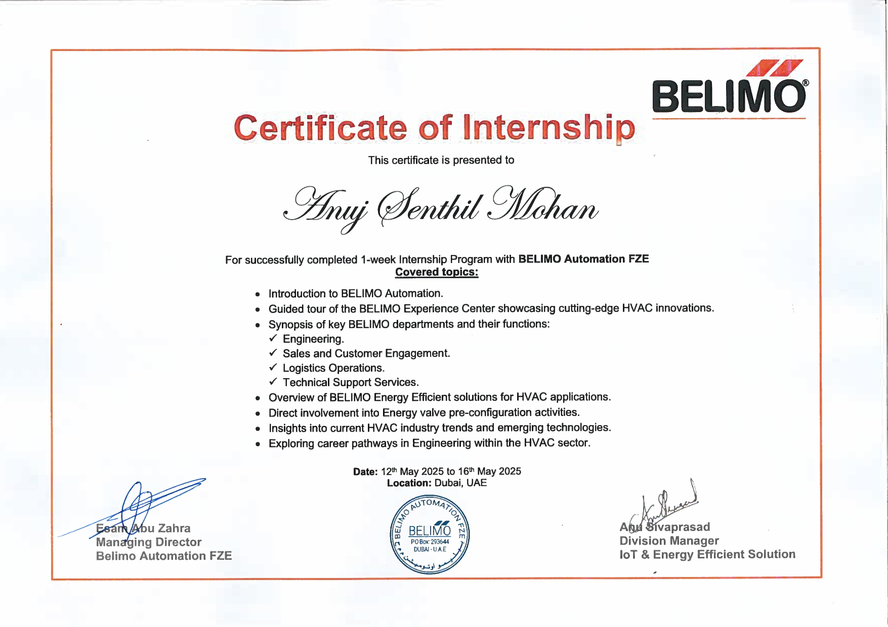
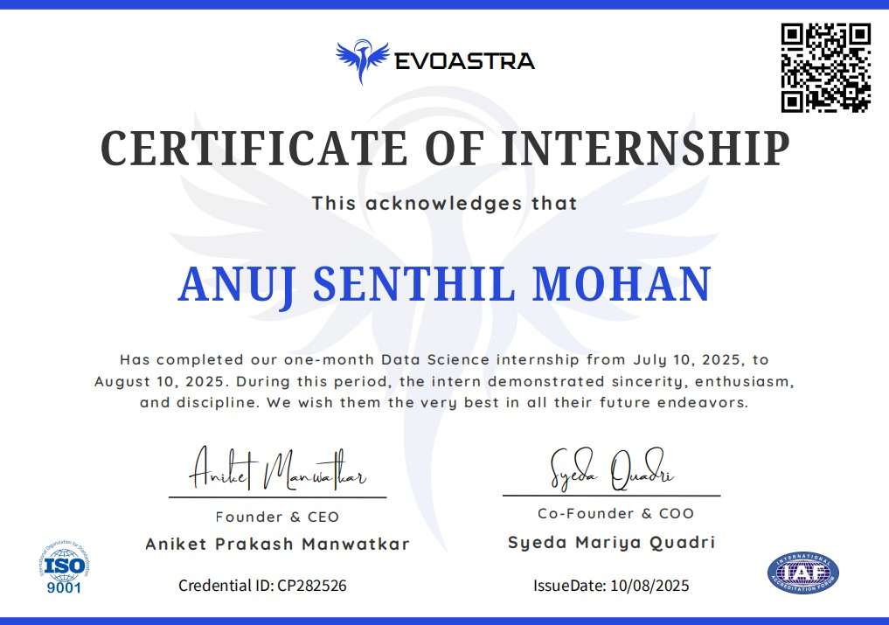
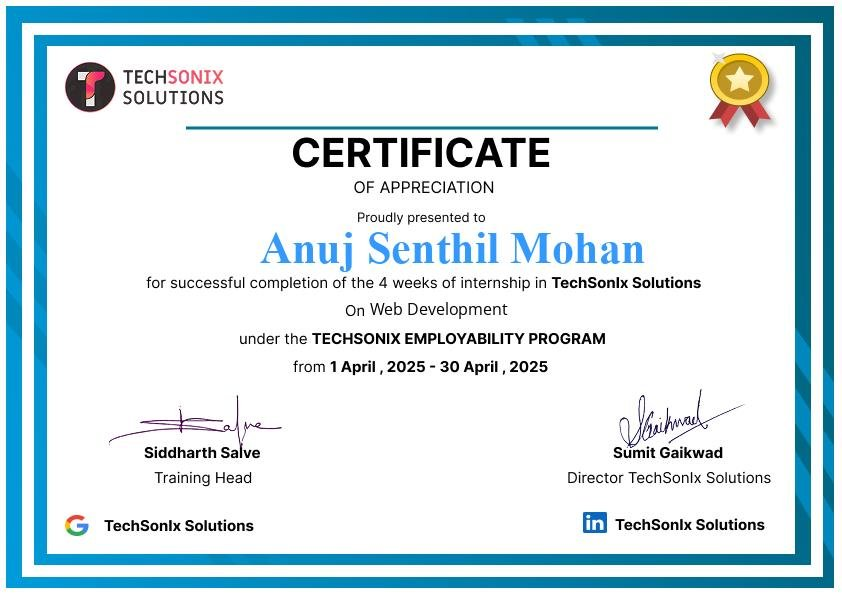
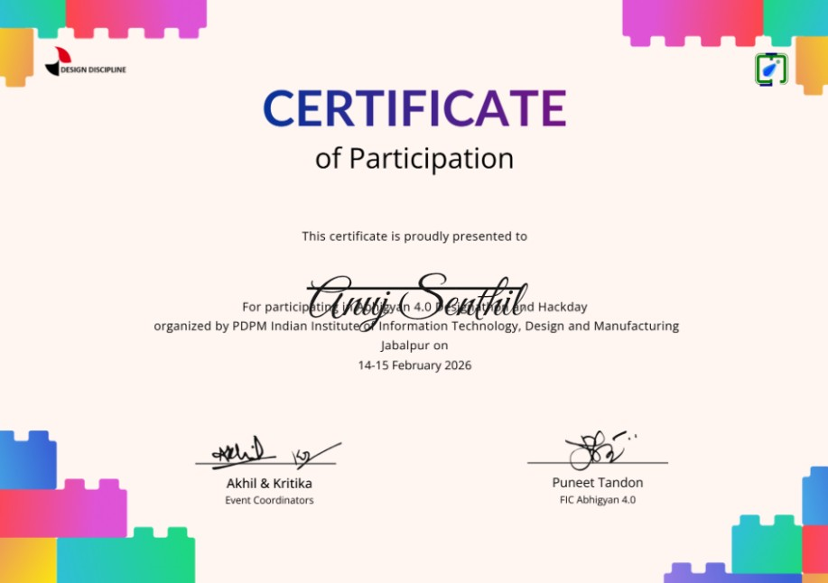

Hi! I'm a third-year Computer Science undergrad with a genuine passion for exploring the endless possibilities that tech has to offer. I'm constantly curious and love diving into new tools, trends, and ideas. Lately, I've been especially drawn to Full-stack Web Development, Data Science (Analytics + ML) and Generative AI — areas where I get to combine creativity with logic to solve real-world problems.
Whether it’s building sleek interfaces, analyzing patterns in data, or experimenting with code just to see what’s possible, I find joy in learning and growing through hands-on projects. I'm always up for a challenge, eager to collaborate, and excited to keep pushing my skills forward.
Currently in development by my team and me, CALIBR is a smart scale ecosystem designed for precision tracking. I am leading the mobile application development, having built a fully functional app using React Native and Expo. My work includes implementing a professional dark-themed UI, global state management, and persistent data logging, ensuring a seamless interface for our integrated hardware sensors.
My BnW-to-Color project is a Python-based application that uses a pre-trained Caffe deep learning model to automatically colorize black and white images. By leveraging OpenCV and NumPy, the system processes grayscale inputs and predicts vibrant, realistic color distributions. The project is structured with a modular architecture, including a CLI for user interaction and high-fidelity output generation, demonstrating my skills in computer vision and model deployment.
Developed a full-stack food delivery platform with a responsive UI using React.js (Vite), featuring user authentication, menu browsing, cart, and order tracking. Built a secure admin dashboard for product and order management, integrated Stripe for online payments, and implemented RESTful APIs with Node.js, Express, and MongoDB.
Developing a real-time Sign Language to Text Converter to enhance accessibility through computer vision. Captured and labeled a custom dataset of hand gestures, leveraging TensorFlow’s Object Detection API and transfer learning with pre-trained models. Optimizing for real-time accuracy and performance to support seamless gesture recognition.
Built a smart recipe suggestion app using Flask and spaCy NLP, enabling users to search recipes by ingredients or natural language. Integrated TheMealDB API to fetch real-time recipes with detailed steps and visuals. Deployed on GitHub and Render with automated setup. Focused on an intuitive UI and advanced ingredient filtering for a smooth user experience.
Collaborated with a teammate to develop a prototype that simulates how a specific drug diffuses into different materials over time. The project aimed to visualize and analyze the rate and depth of diffusion based on material properties and environmental conditions. This hands-on exploration enhanced our understanding of drug delivery mechanics and material interaction, laying a foundation for future applications in biomedical research and healthcare innovation.
Conducted an in-depth data analysis case study on a bike share company to compare riding behaviors of casual users and annual members. Performed data cleaning, transformation, and exploratory analysis to identify key usage patterns, peak ride times, and differences in trip duration. Created insightful visualizations and summarized findings to support strategic decisions aimed at converting casual riders to long-term members. (View full analysis on Kaggle:
Built a feature-rich gaming community platform using modern web technologies. The site allows users to explore PC games with in-depth details like genres, ratings, and descriptions. Developed a real-time chatbox for seamless user interaction and personalized profiles to showcase played games. Emphasized intuitive UI/UX design to ensure accessibility and strong user engagement.
Engineered a scalable Real Estate Management System that allows users to list and discover properties with advanced filters. Developed tools for property owners to manage listings, track maintenance requests, and monitor active insurance policies. Prioritized usability and efficient data handling to deliver a seamless experience across user roles.
May 2025 : 1-week
Completed a one-week internship at Belimo, where I gained valuable exposure to IT integration within HVAC systems. I explored how smart energy valves operate and how their data feeds into intelligent Building Management Systems (BMS). The internship provided hands-on insight into the Niagara platform and BACnet MSTP protocol. I also analyzed data flow in building automation and observed the application of IT in areas like logistics, finance, and technical support across a corporate environment.

July 2025 : 4-weeks
During my internship at Evoastra Ventures, I focused on image-based data extraction and processing. I developed automated workflows to convert visual data into structured formats, enhancing data accessibility for the team. This role allowed me to refine my analytical decision-making and technical communication while working on high-impact, data-driven projects in a professional environment.

April 2025 : 4-weeks
During my one-month web development internship, I created this responsive portfolio website using HTML, CSS, and JavaScript. I focused on clean layouts with Flexbox and added basic interactivity. I also learned how to make websites work well on both mobile and desktop devices.

Feb 2026 : Tech&Design Hackathon
Abhigyan was a collaborative tech and design hackathon that brought together developers and designers to solve complex, real-world problems. The event emphasized design-thinking alongside technical implementation, challenging participants to build solutions that were not only functional but also intuitive and user-friendly. It served as a great platform for cross-disciplinary teamwork and rapid prototyping within a high-intensity, creative environment.

August 2024 : 24hr Hackathon
Participated in my first 24-hour college hackathon, where our team built a prototype of a gamers hub website. This experience marked the beginning of my coding journey and gave me hands-on exposure to collaborative development under tight deadlines. I learned the fundamentals of team coordination, time management, and web development while contributing to both frontend design and backend functionality. Successfully completed and presented the project within the time limit.